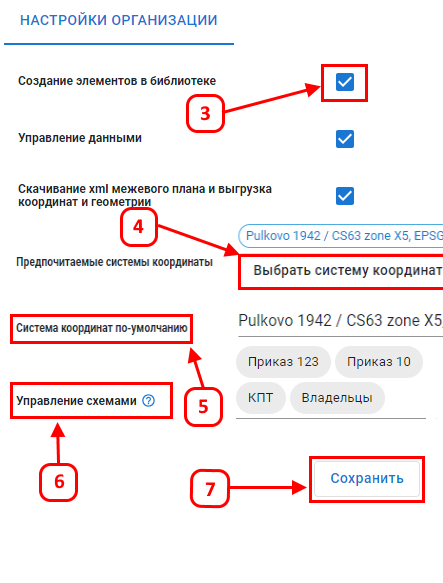

Настройки организации
Раздел предоставляет возможность управлять параметрами и доступными функциями специализированной картографической платформы.
Основные элементы управления в этом разделе:

- Секция настроек с галочками (3): Позволяет активировать или деактивировать определенные функции для всех пользователей. Например, можно включить или отключить создание элементов в библиотеке.
- Предпочитаемые системы координат (4):Позволяет формировать список предпочитаемых систем координат, которые будут доступны пользователям при работе с геоданными.
- Выбор системы координат по умолчанию (5): Опция для задания основной системы координат, которая будет применяться по умолчанию при работе с картографическими слоями.
- Управление схемами (6): Позволяет включать или выключать для пользователей организации тегированные шаблоны данных.
- Кнопка "Сохранить" (7): Применяет и сохраняет все внесенные изменения в настройках организации.